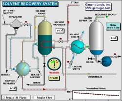
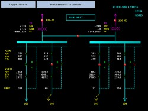
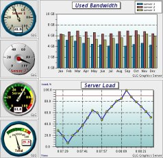

GLG AJAX Demos
|
Click here for HTML5 & JavaScript Demos. |
The demos on this page use server-side AJAX (ASP or JSP).
Click here
for the HTML5 & JavaScript client-side demos.
|  | AJAX
Process Control / SCADA Demo This custom process monitoring dashboard shows a live process updated with real-time data. The demo handles user interaction, displays tooltips and pops up dialogs showing the object's state when the object is clicked with the mouse. |
|  | AJAX
Circuit Monitoring / SCADA Demo This custom electrical circuit monitoring dashboard shows a live process updated with real-time data. |
|  | AJAX
Dashboard Demo This demo presents a sample of an AJAX Dashboard that combines several individual servlets in a composite dashboard display. |
| AJAX
Avionics Dashboard Demo This demo presents a sample of an AJAX avionics display with a real-time data feed. The demo uses GLG Avionics Widgets. |
| AJAX
GIS Visualization Demo This demo presents a sample of an AJAX GIS Visualization with dynamic airplane icons and a real-time data feed. |
| AJAX
Dial Demo This demo displays samples of the GLG Dial Widgets and demonstrates how to use a dial widget on a web page, including real-time data feed and changing the dial's size. |
| AJAX
Real-Time
Graph Demo This demo displays samples of the GLG Graphs and demonstrates how to use a graph widget on a web page and update it with real-time data. The demo's source code provides an example of handling properties of a graph. |
| AJAX
Graph Selection Demo This demo demonstrates the use of the graph tooltips and drill-down pop-up dialogs when a graph's datasample is selected with the mouse. |